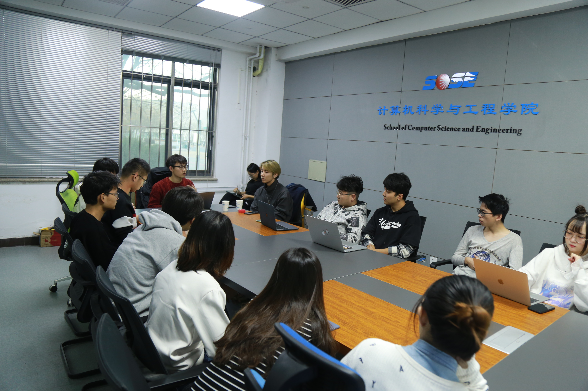
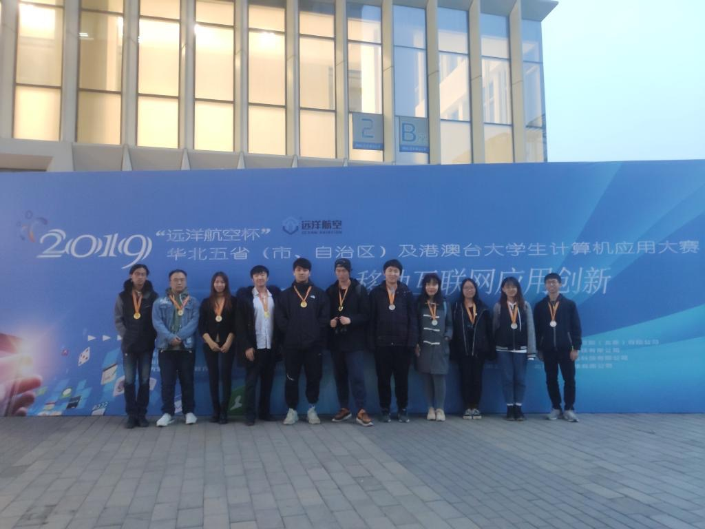

天外天工作室&学生创新实践中心
2019年11月24日，邀请天津大学天外天工作室来到学生创新实践中心，于中心会议室第一次开展了与其他学校互联网工作室的交流分享会。本次交流会就工作室纳新、运营、技术学习等方面进行了深入交流，收获满满

2019年华北五省计算机应用大赛
学生创新实践中心三支队伍晋级赴北京参加决赛。最终收获一等奖两项，二等奖一项，优秀组织奖一项。本次大赛充分展示了天津理工大学计算机科学与工程学院学子的创新智慧和创造能力，学院将一如既往的支持同学们积极参加此类创新性学科竞赛，不断培养学生的实践能力、创新意识和动手能力，并在未来的比赛中再创佳绩。

蓟县团建活动
流水的科协不变的蓟县！！！每年的十月、十一月都是中心带领科协外出团建的日子，今年也延续了中心多年的传统，又来到了蓟县进行两天一夜的团建活动，让长时间坐在工作室里的coder们也来爬山运动一下。在团建中也让科协成员们互相熟悉，推动以后技术学习上的交流和团队项目的合作。